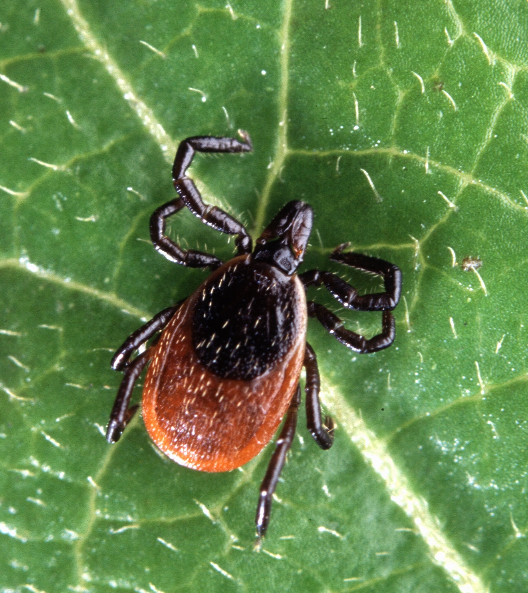
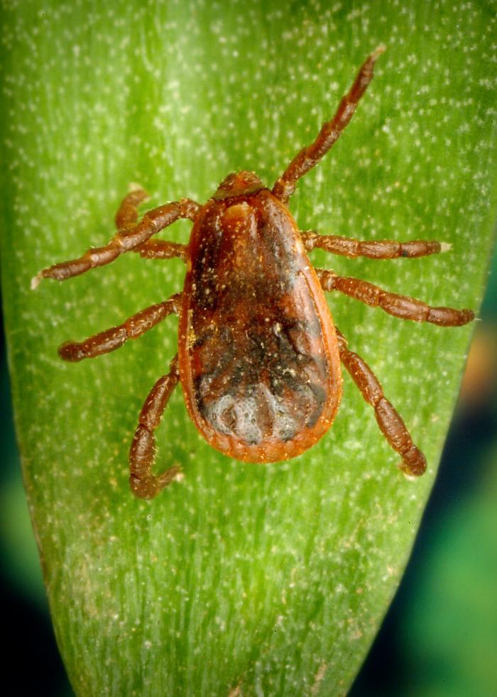
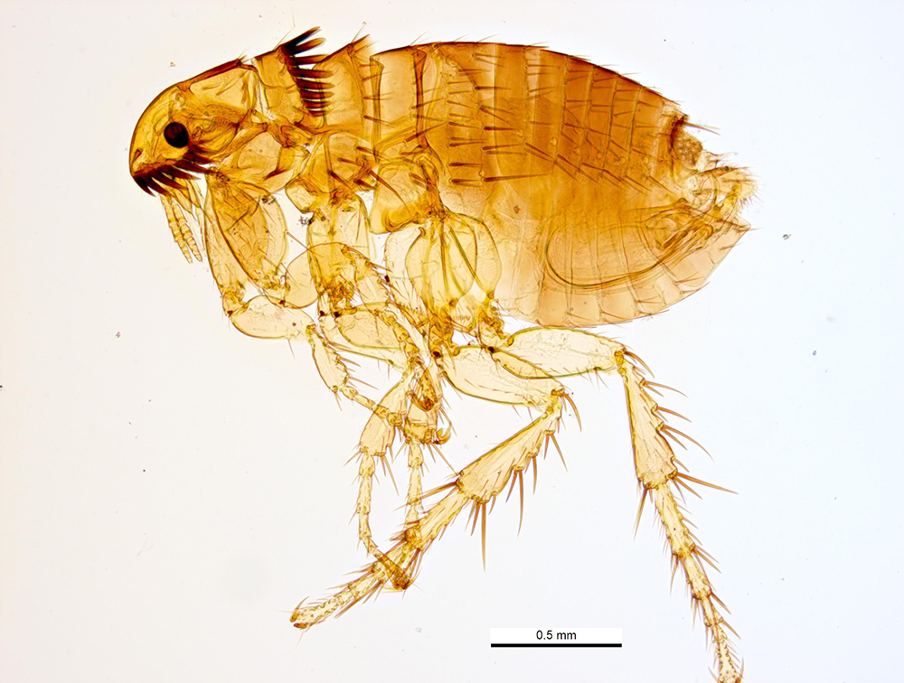
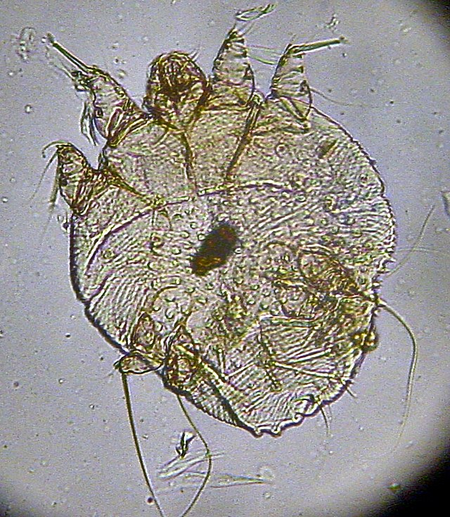
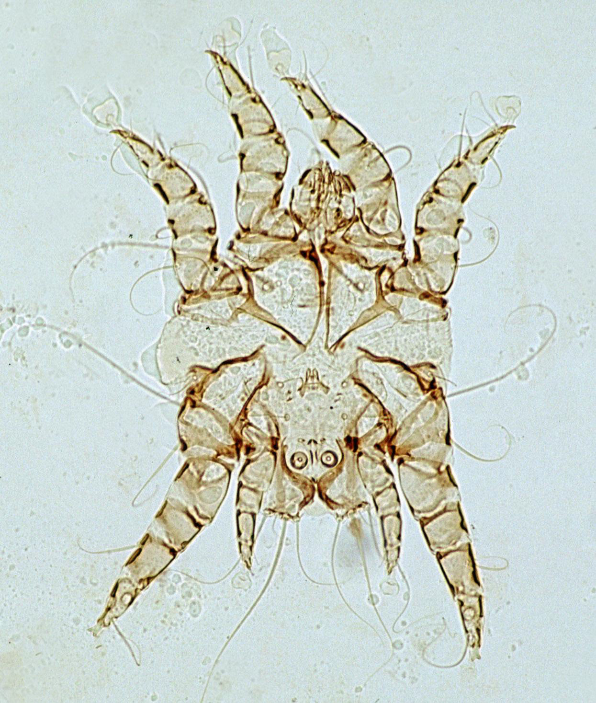
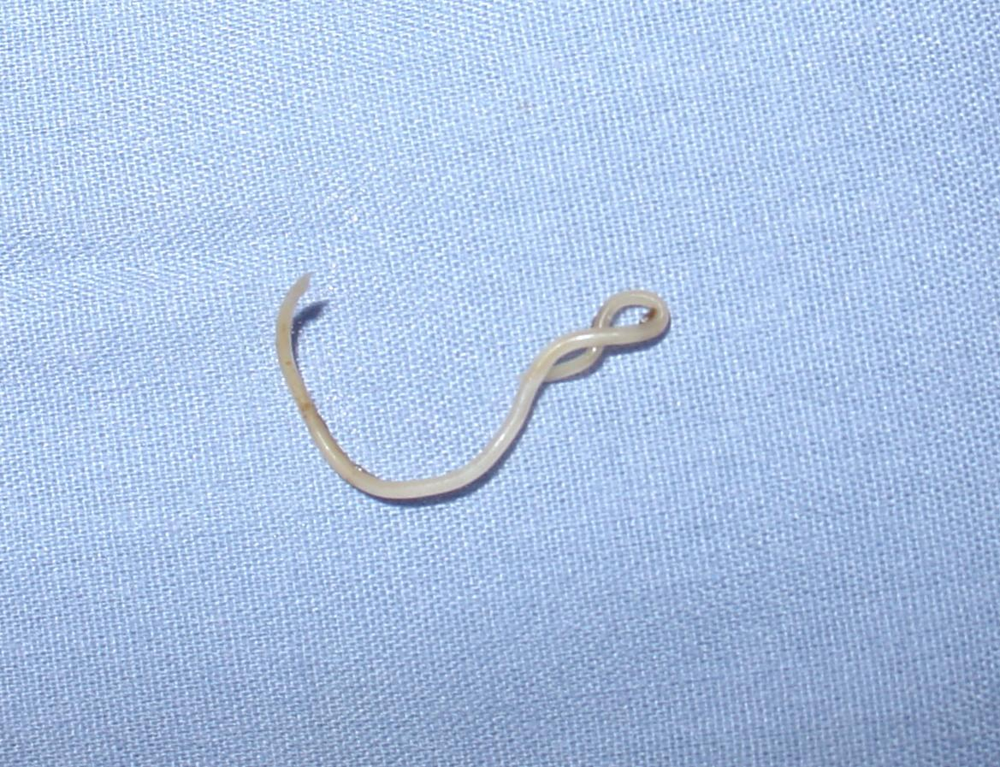
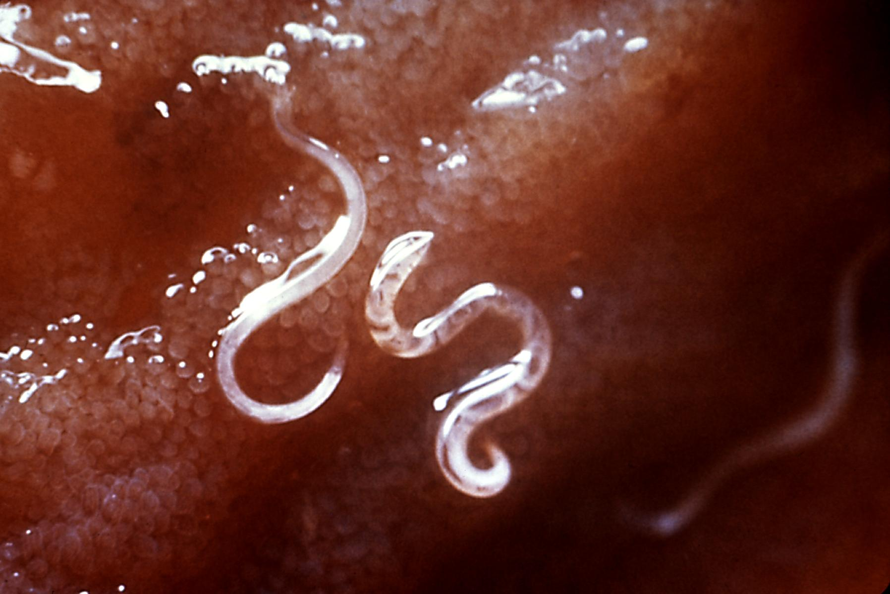
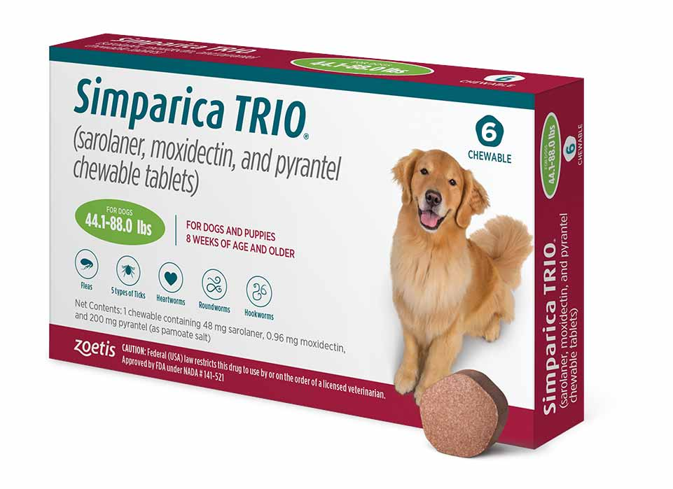
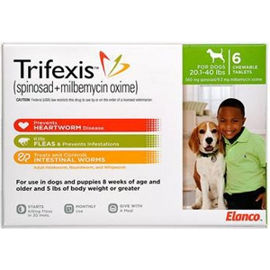

Introduction
Heartworm, flea, and tick prevention is a crucial aspect of small animal wellbeing, helping to protect pets from potentially serious and life-threatening parasitic infections. With climate change and increased pet travel, parasites that were once rare in Canada are now more common and more threatening. Fortunately, preventative medications are an easy an effective way to prevent the spread of many diseases.
For this assignment, I chose Bravecto, Trifexis, and Simparica Trio because they are among the most popular medications in Ukraine. In Canada, these are prescription medications, but in Ukraine, they can be purchased over the counter at pet stores. These parasite preventatives offer varying levels of protection against fleas, ticks, heartworm, and intestinal parasites. While they share some similarities, they differ in formulation, duration of effectiveness, and the specific parasites they target. This comparison will provide an overview of these three products, highlighting their benefits, limitations, and suitability for different pets.
By understanding these options, veterinary professionals and pet owners can make informed decisions to ensure optimal parasite protection for their pets.
Common Parasites [1]
| Feature | Black-legged Tick | American Dog Tick | Brown Dog Tick | Flea | Sarcoptic Mange | Ear Mite | Roundworms | Hookworms | Whipworms | Heartworm |
|---|---|---|---|---|---|---|---|---|---|---|
| Scientific Name | Ixodes scapularis | Dermacentor variabilis | Rhipicephalus sanguineus | Ctenocephalides felis/canis | Sarcoptes scabiei | Otodectes cynotis | Toxocara canis/cati/leonina | Ancylostoma caninum/tubaeforme | Trichuris vulpis | Dirofilaria immitis |
| Image [2] |  |

|
 |  |  |  |  |  | ||
| Definitive Host | Deer, rodents, dogs, humans | Mammals | Dogs | Dogs, cats | Mammals | Dogs, cats, rabbits | Dogs, cats | Dogs, cats | Dogs, foxes, coyotes | Dogs |
| Zoonotic | Transmits diseases to humans | Transmits diseases to humans | Transmits diseases to humans | Can bite humans, transmits disease | Yes | Yes | Yes | Yes | Yes | Yes |
| Vector | Lyme disease, Babesiosis | Rocky Mountain spotted fever, Tularemia | Ehrlichiosis, Babesiosis | Flea allergy dermatitis, tapeworms | Intense pruritus, lesions | Otitis externa, ear infections | Pot-belly, vomiting, diarrhea, coughing | Anemia, diarrhea, melena, dermatitis | Severe diarrhea, anemia, hematochezia | Heartworm disease |
| Active Period | Temperature above 5°C | Temperature above 5°C | Temperature above 5°C | Year-round | Year-round | Year-round | Year-round | Year-round | Year-round | Mosquito season |
| Mode of Transmission | Direct contact | Direct contact | Direct contact, infested environments | Direct contact, infested environments | Direct contact with infected animals | Direct contact with infected animals | Ingestion of eggs, ingestion of paratenic host, transmammary, transplacental | Ingestion of eggs, ingestion of paratenic host, transmammary, transplacental, skin penetration | Ingestion of eggs | Mosquito bite, transplacental |
| Other | Prefers wooded areas, needs at least a day to transmit disease | Found in bushy areas | Most widespread tick, adapts to indoor environments | Do not live on a pet, pupae almost indestructible, house needs to be treated as well | Intense itching, contagious | Causes head shaking, coffee ground-like debris, contagious | Common in puppies and kittens | Can cause anemia | Can survive in soil for years | Hard and expensive to treat, lives in the right ventricle/atrium, if killed can cause emboli |
Parasite Prevention Drugs Comparison
| Trade Name | Bravecto [3] | Simparica Trio [4] | Trifexis [5] |
|---|---|---|---|
| Image[2] |

|
 |  |
| Active substance | Fluralaner | Sarolaner, Moxidectin, and Pyrantel | Spinosad, Milbemycin Oxime |
| Manufacturer | Merck Animal Health (Intervet Canada Corp.) | Zoetis Inc. | Elanco |
| Target species | Dogs, cats | Dogs | Dogs |
| Parasites Prevented | Ticks, fleas | Ticks, fleas, roundworm, hookworm, heartworm disease prevention | Fleas, hookworms, roundworms, whipworms |
| Parasites Details | Kill adult fleas, treatment and prevention of fleas (Ctenocephalides felis) and ticks (Ixodes scapularis, Dermacentor variabilis, Haemaphysalis longicornis, Rhipicephalus sanguineus, Amblyomma americanum) | Treatment and prevention of fleas (Ctenocephalides felis), ticks (Ixodes scapularis, Dermacentor variabilis, Rhipicephalus sanguineus, Amblyomma americanum, Amblyomma maculatum, Haemaphysalis longicornis), adult hookworms (Ancylostoma caninum, Uncinaria stenocephala), roundworms (Toxocara canis and Toxascaris leonina), and heartworm prevention (Dirofilaria immitis) | Treatment and prevention of fleas (Ctenocephalides felis), adult hookworms (Ancylostoma caninum), roundworms (Toxocara canis, Toxascaris leonina), whipworms (Trichuris vulpis), and heartworm prevention (Dirofilaria immitis) |
| Product Form | Chewable Tablet, Solution | Chewable Tablet | Chewable Tablet |
| Administration | Oral, Topical | Oral | Oral |
| Contraindications | Dogs with known or suspected allergy or intolerance to fluralaner | No known contradictions | No known contradictions |
| Pros |
Safe for majority of dogs, including MDR1 dogs Almost 100% effective against ticks and fleas Fast-acting and long-lasting |
Broad spectrum with heartworm prevention No known contrindications Fast-acting |
Broad spectrum with heartworm prevention No known contrindication Fast-acting |
| Cons |
Not effective for puppies less than 6 months of age or
weighing less than 4.4 pounds Not a heartworm preventative |
Possible neurologic adverse reactions Not effective for puppies less than 8 weeks or weighing less than 2.8 pounds Expensive |
Does not provide protection against ticks Not effective for puppies less than 8 weeks or weighing less than 5 pounds |
| Adverse Reactions | Rare - GI disorders (V&D, hypersalivation), lack of efficacy, lethargy, convulsions, ataxia, pruritus | V & D, lethargy, anorexia, polyuria, and hyperactivity | V & D, pruritus, lethargy, dermatitis |
| Mode of Action | Inhibitor of the arthropod nervous system |
Sarolaner blocks chloride ions in insects and mites, leading
to increased neuronal stimulation, paralysis, and death.
Moxidectin interferes with nerve and muscle function in parasites, resulting in paralysis and death. Pyrantel acts as a depolarizing, neuromuscular blocking agent in susceptible parasites. |
Spinosad targets the nervous system of insects, causing
muscles to spasm, leading to paralysis and death. Milbemycin oxime affects the nerve and muscle cells of parasites, causing paralysis and death. |
| Duration | 12 weeks | 1 month | 1 month |
| Efficacy |
Began to kill fleas within 2 hours after administration
Fleas ≥ 99.7% Dermacentor variabilis > 97%, Haemaphysalis longicornis = 100% Ixodes scapularis and Rhipicephalus sanguineus > 96% |
Began to kill fleas within 4 hours after administration
Fleas > 97.8% Dirofilaria immitis = 100% Ixodes scapularis, Rhipicephalus sanguineus, Dermacentor variabilis, Haemaphysalis longicornis 98.9% Toxocara canis = 99.2% |
Began to kill fleas within 30 minutes after administration Dirofilaria immitis = 100% Fleas = 100% Intestinal Nematode > 90% |
| Safety Information | Should be administered with food | Test for existing heartworm infection prior to administration |
Test for existing heartworm infection prior to administration
Should be administered with food If vomiting occurs within an hour of administration, administer another full dose |
| Minimal dosage | 25 mg/kg body | 1.2 mg/kg sarolaner, 24 µg/kg moxidectin, 5 mg/kg pyrantel | 30 mg/kg spinosad, 0.5 mg/kg milbemycin oxime |
| Cost | $51-$57 + tax | $21-$30 + tax | $27–$35 + tax |
Conclusion
In conclusion, parasite prevention is vital for maintaining the health and well-being of pets, especially as climate change and increased pet travel introduce new risks. Bravecto, Simparica Trio, and Trifexis are among the most popular options in Ukraine, each offering unique benefits in protecting against fleas, ticks, heartworm, and intestinal parasites. While these medications share the common goal of protecting pets from harmful parasites, they vary in their active ingredients, the range of parasites they target, and their duration of effectiveness. Understanding these differences is crucial for veterinary professionals and pet owners when choosing the best option for their pets' specific needs.
When evaluating each medication, there are clear pros and cons. Bravecto offers long-lasting protection against fleas and ticks but doesn't cover heartworm prevention. Simparica Trio covers fleas, ticks, heartworms, and intestinal parasites, making it the most comprehensive option, though it requires a heartworm test before administration. Trifexis covers fleas, heartworms, and intestinal parasites but lacks tick protection, which could be a limitation in tick-heavy areas. While Simparica Trio may be the most optimal option for broad parasite protection, it’s crucial to perform a heartworm test before administration to ensure safety and effectiveness.
References
- [1]VETC 1022, Veterinary Lab Techniques 1 - Slides by Jody Carrict, RVT
- [2]Images are clickable to get to the source
- [3] Merck Animal Health website
- Bravecto Package Insert
- Bravecto Safety Data Sheet
- Bravecto Health Canada and U.S. Food and Drug Administration review of veterinary drug product
- Bravecto European Union Veterinary Medicine Authorization
- Pets Drugmart Bravecto Price
- [4] Zoetis website
- Simparica Trio Package Insert
- Simparica Trio Health Canada Product Information
- Simparica Trio Safety Data Sheet
- Pets Drugmart Simparica Trio Price
- [5] Elanco website
- Trifexis Package Insert
- Trifexis Price